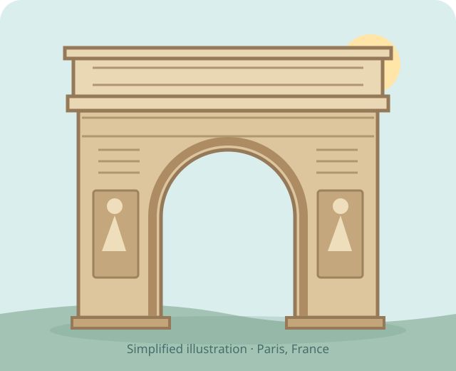

A place we visited
A giant arch
🇫🇷 Arc de Triomphe · 凯旋门We visited this stone monument in Paris. Its name means “Arch of Triumph”—an arch celebrating victory.
Our visit · 4 October 2026
Can you trace the curved opening with your finger?

A place we visited
We visited this stone monument in Paris. Its name means “Arch of Triumph”—an arch celebrating victory.
Our visit · 4 October 2026
01 · Who had the idea?
Napoleon was the emperor of France. He ordered the arch to honour his armies and their victories.
02 · An old idea, used again
The designers looked at ancient Roman arches. These grand stone gateways had also celebrated victories.
03 · It was not quick!
Work stopped and started as France's leaders changed. The arch was finished under King Louis-Philippe, not Napoleon.
04 · Stories in stone
The real arch has carved figures and names of battles and military leaders. The stone helps tell its story.
05 · A place to remember
An unnamed soldier from the First World War was buried here in 1921. He represents many people who died in war.
A remembrance flame was first lit in 1923. It helps people remember them.
06 · Our Paris memory
Choose a detail you noticed, or one you want to look for next time.
Your choice is saved only on this device.